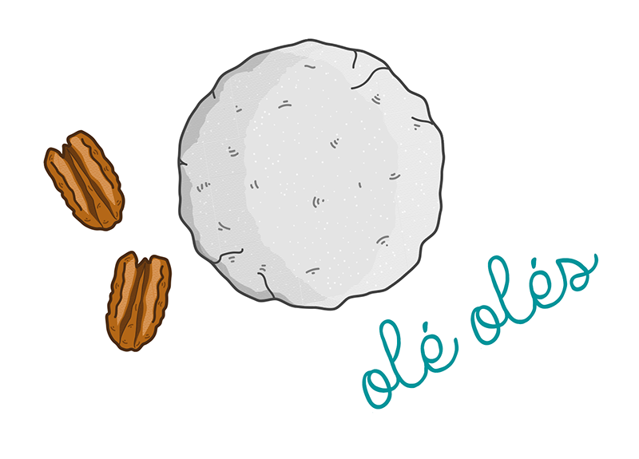
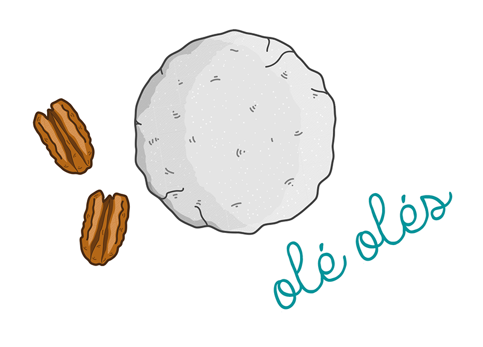
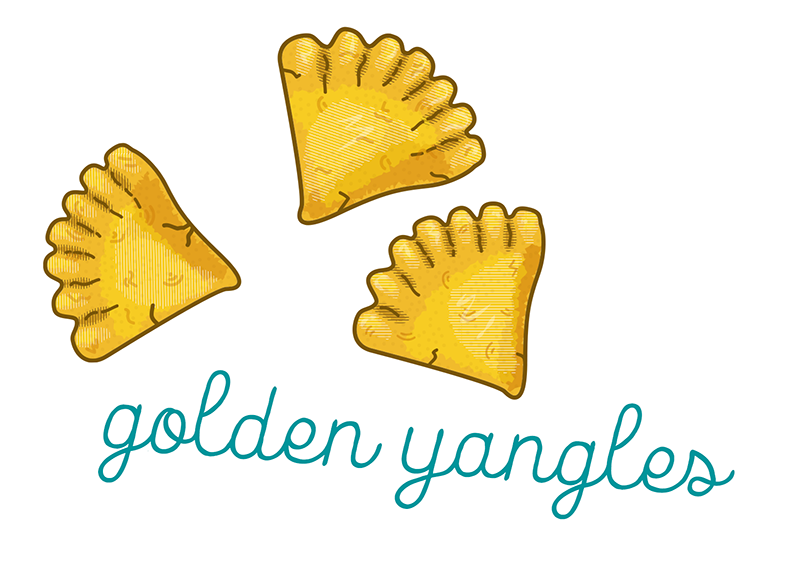
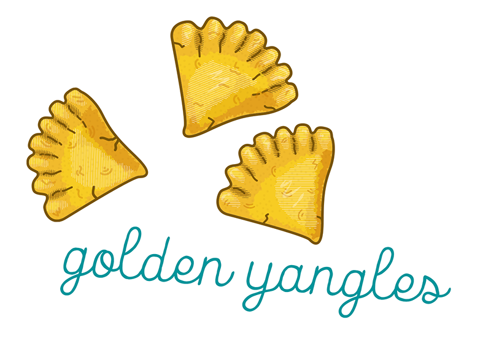

Click on a preview image to check out a project!
Wedding Invite: Hannah and Jake
These letterpressed invitations reflect different parts of the bride and groom's relationship. New York means a lot to the couple, and Hannah wears a necklace Jake bought her with an imprint of the Brooklyn Bridge on it, so the original monoline illustration is my interpretation of the image on this necklace. The customized map on the back of the invitation shows where their relationship milestones happened accross the city, with personal touches like the trumpet symbolizing their engagement during the Jazz Age Lawn Festival and the cat in their home representing their two cats.
 >
>
Discontinued Girl Scout Cookies
These illustrations were featured on an article on mentalfloss.com listing 15 Girl Scout Cookies that have been discontinued. I used Illustrator for this project, referencing photos of each cookie.


 

 



Hannah and Jake's Wedding Invitation
Mental Floss: Currency Graphics
Illustration: "Weird Als Yankovic"
Mental Floss: Retired Girl Scout Cookies
Mental Floss: Burger Chain Map
Custom Slim Jim Typeface